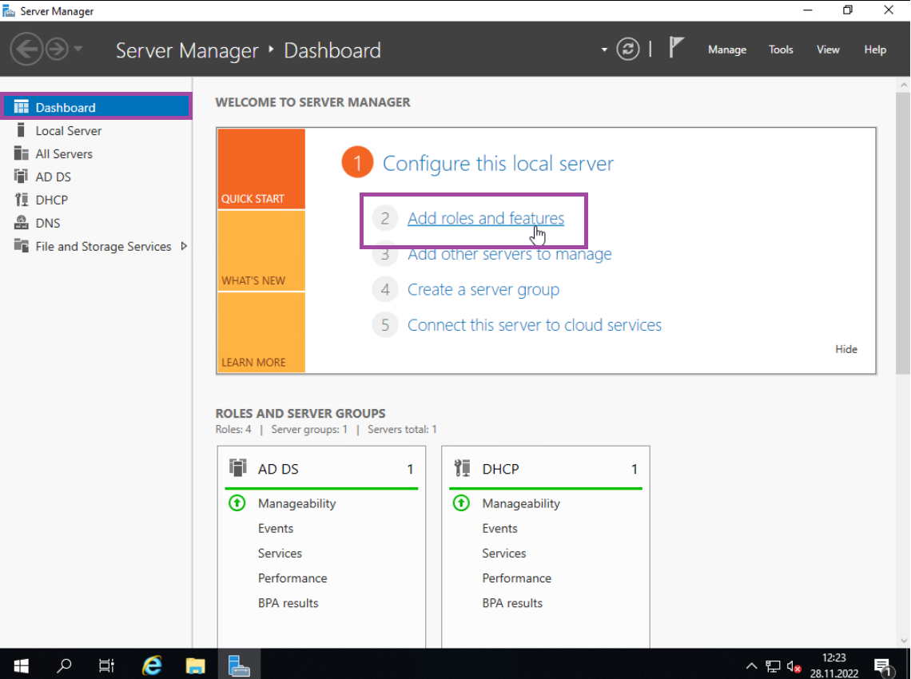
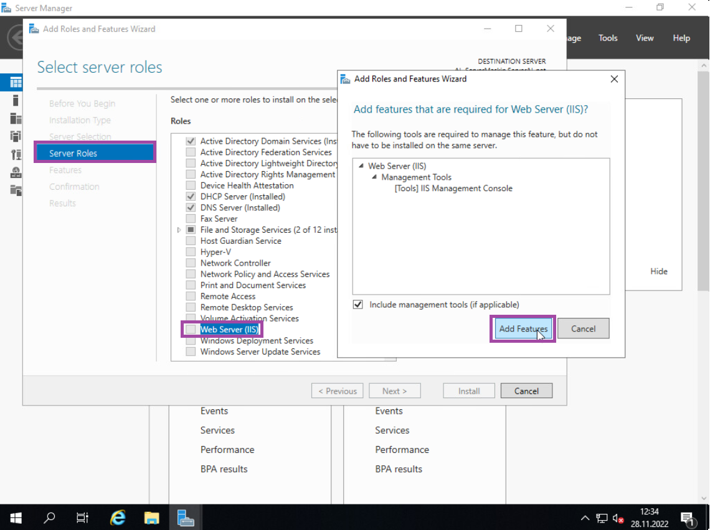
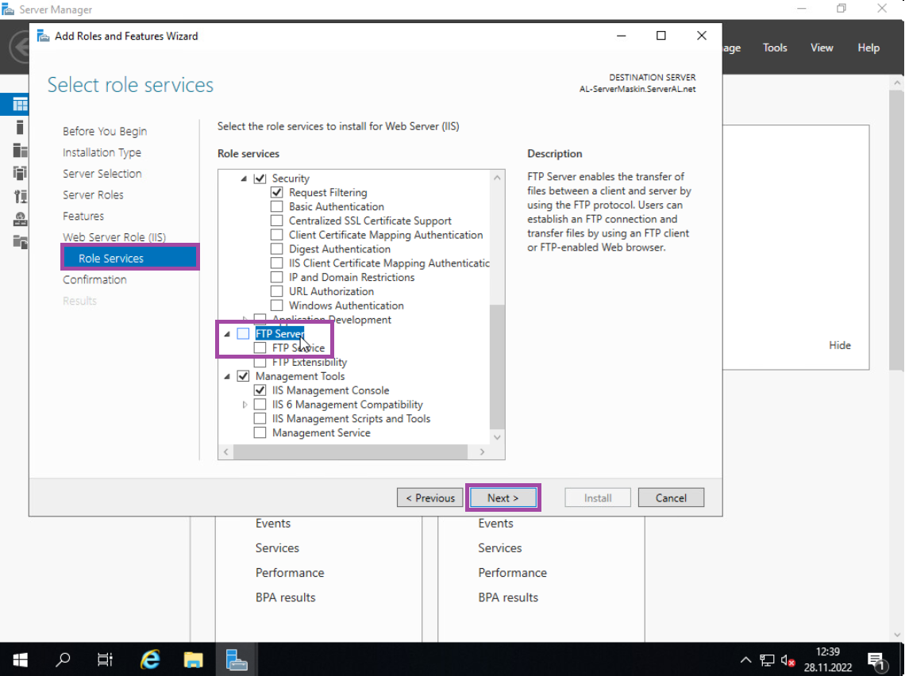
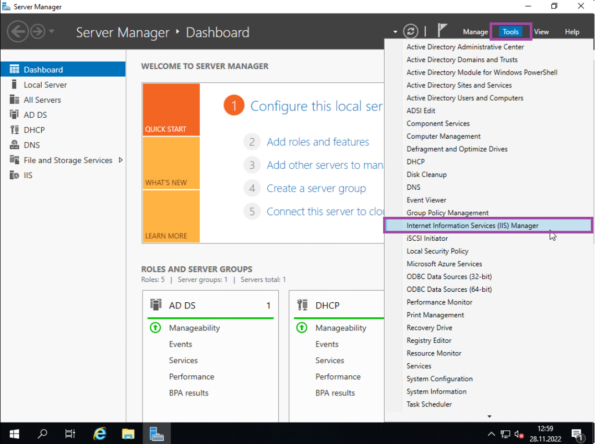
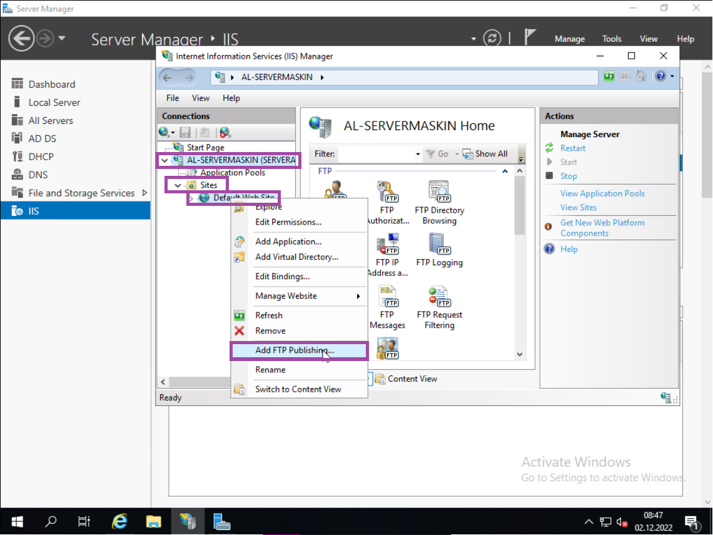
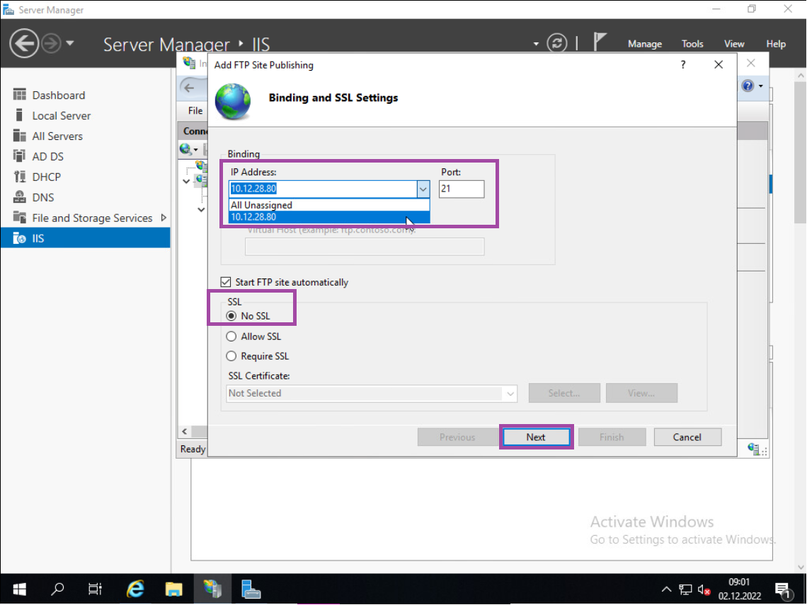
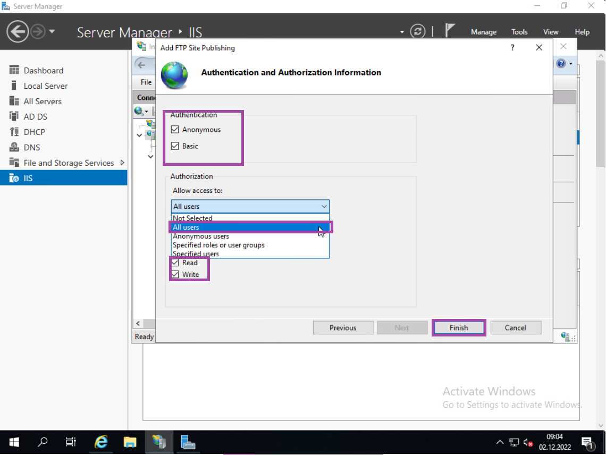

LAURIN LIMITED GUIDEBOOK ©
INSTALLERE IIS & FTP
Lær hvordan man setter opp IIS (Internet Information Services), og FTP (File Transfer Protocol). IIS er windows sitt system for å hoste nettsider. Hvis du er kjent med Ubuntu og Apache, så er IIS det samme som Apache. FTP er hvordan vi kan se filsystemet til serveren vår fra hovedpcen, og sende filer til serveren. Dette trenger vi for at vi kan kode nettsiden vår på hovedpcen, også gi serveren filene til nettsiden.
Nå skal vi sette opp en IIS Server så vi kan hoste en nettside på serveren. Dette gjør vi ved å først; gå tilbake til server maskin VM’en, naviger til Dashboard og trykk på «Add roles and features».
Så navigerer du til «Server Roles», ved å trykke på «next». Her finner du «Web Server (IIS)», som er akkurat det vi trenger. Trykk på den og trykk på «Add Features».
Naviger til «Role Services» og finn «FTP Server» i «Role Services» lista. Legg til den ved å trykke på den og sjekk at «FTP Service» er også huket av. Til slutt så trykker du på «Next» og trykk på «Install». (RESTART MASKINEN ETTER INSTALLESJONEN)
Nå må vi konfigurere FTP for å sette opp web serveren. Begynn med å åpne opp «Internet Information Serivces (IIS) Manger», som du finner i «Tools».
Når IIS panelen åpner seg, så navigerer du til servermaskinen din på venstre siden i listen, og trykk på pil ikonet. Der finner du «Sites» med en pil ved siden av den, som du også trykker på. Så finner du «Default Web Site», høyre klikk på den, og trykk på «Add FTP Publishing…».
Her skal du legge inn IP Addressen til web serveren, trykk på pil ikonet ved «IP Address» boksen, så anbefaler serveren IP’en din automatisk. Trykk på den og sjekk at porten er på 21. Deretter så huker du av «No SSL» og fortsetter ved å trykke på «Next».
Huk av på «Anonymous» og «Basic» Authentication her, så nedefor på «Allow access to:», velg «All Users». Under der igjen, huker du av på «Read» og «Write», og til slutt så trykker du på «Finish».
Fortsett til neste steg